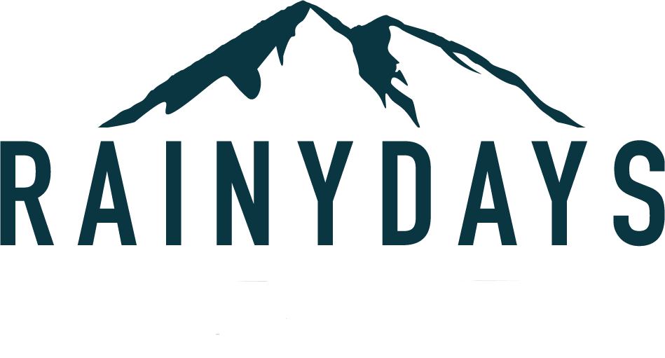
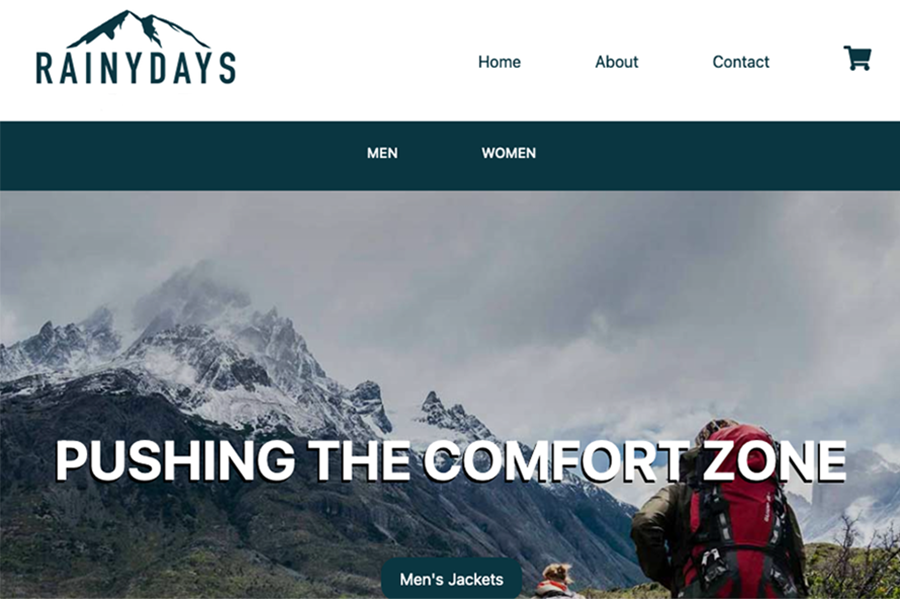

PORTOFOLIO 1 Kristoffer Røttingen
Welcome to my portofoile. On this page you will find my 3 biggest projects from my first year as a Frontend developer. There will be a short report on what i have changed on every page of the projects. Enjoy!